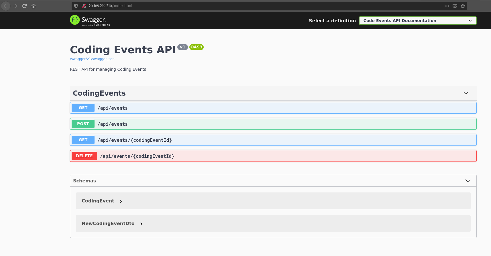

CodingEventsAPI with KeyVault¶In our studio today, we will be deploying the CodingEventsAPI to an Ubuntu VM. As part of the deployment we will provision an Azure Key Vault to manage the database connection string of an embedded MySQL database server.
In this studio, you will be given a partially completed Bash script that will configure your VM. You will be responsible for applying what you have learned to complete the automation.
Note
These lessons are focused on practicing operations and not on learning development. For this reason, we will be using the solution branch 2-mysql-solution that includes the development-side changes. Feel free to look over the code base but remember to focus your time on the deployment.
Let’s start by considering the steps needed to deploy this application. Note that this list is an overview, for the specific details refer to your notes and previous articles.
On the Azure side you will need to:
To complete the configuration script you will need to write the commands to:
There are steps in this process that can be easily over-looked.
As you work on your deployment keep in mind:
Authentication Type of Passwordstudent and therefore a home directory of /home/student80 (HTTP traffic)Once you have completed these steps, you can execute the configuration script in the RunCommand console to complete the deployment.
The following sections will guide you on specifics and steps you may not have seen yet. Before starting the studio, take a moment to read them over and come up with a plan for when and how you will use them.
We will need to create a resource group that will contain a virtual machine and a Key Vault.
We recommend the following naming patterns:
lc-<yourname>-<mmyy>-secrets-rglc-<yourname>-<mmyy>-secrets-vmlc-<yourname>-<mmyy>-secrets-kvReplace <mmyy> with the digits for the month and year for example: March of 2020 would be 0320.
Note
Azure Key Vault names must be globally unique. If you have to adjust your Key Vault name make sure to keep track of it as you will need to include it in your source code later.
To configure your Key Vault, you will need to create a new secret with the following values:
ConnectionStrings--Defaultserver=localhost;port=3306;database=coding_events;user=coding_events;password=launchcodeRefer to the previous walkthrough to review how to grant a VM access to a Key Vault.
You will need to do update your appsettings.json file to include the name of your Key Vault.
In your forked CodingEventsAPI repository directory, switch to the 2-mysql-solution branch. Make the Key Vault name change in the appsettings.json file then commit and push your code back to your GitHub repository.
The line you will be looking for is:
"KeyVaultName": "<your-keyvault-name>"
Warning
If you do not update your code and push it back to your GitHub repository your deployment will fail.
We have been using the RunCommand tool to run Bash scripts on our virtual machine. This tool is handy, but not the most pleasant experience because of its inherent processing delay. Instead of running multiple commands through the RunCommand let’s put together a single script that will do everything necessary to deploy our application.
Tip
After learning the specific steps of a deployment process it’s almost always a good idea to put those steps together in a script. The more practice you get with operations, the more scripting deployments will become second nature. Review previous walkthroughs and studios to combine all of the steps, from each article, into one script.
We will provide you with a starter script that installs and sets up the embedded MySQL database server. However, you will be responsible for piecing the rest of the script together yourself.
Take notice of the TODO tasks in the script below. After you have completed the script, you will need to run it in the RunCommand section of your VM. Then your application will be deployed all in one step!
# set HOME environment variable
export HOME=/home/student
# update apt-get repositories
apt-get update
### MySQL section START ###
# download the apt-get repository source package for MySQL
wget https://dev.mysql.com/get/mysql-apt-config_0.8.15-1_all.deb
# register the repository package with apt-get
dpkg -i mysql-apt-config_0.8.15-1_all.deb
# update apt-get now that it has the new repo
apt-get update
# set environment variables that are necessary for MySQL installation
debconf-set-selections <<< "mysql-community-server mysql-community-server/root-pass password lc-password"
debconf-set-selections <<< "mysql-community-server mysql-community-server/re-root-pass password lc-password"
# install MySQL in a noninteractive way since the environment variables set the necessary information for setup
sudo DEBIAN_FRONTEND=noninteractive apt-get -y install mysql-server
# create a setup.sql file which will create our database, our user, and grant our user privileges to the database
cat >> setup.sql << EOF
CREATE DATABASE coding_events;
CREATE USER 'coding_events'@'localhost' IDENTIFIED BY 'launchcode';
GRANT ALL PRIVILEGES ON coding_events.* TO 'coding_events'@'localhost';
FLUSH PRIVILEGES;
EOF
# using the mysql CLI to run the setup.sql file as the root user in the mysql database
mysql -u root --password=lc-password mysql < setup.sql
### MySQL section END ###
# TODO: download and install the dotnet SDK
# set DOTNET_CLI_HOME environment variable
export DOTNET_CLI_HOME=$HOME
# TODO: clone your forked repo
# TODO: change into the repo directory
# TODO: checkout the correct branch (2-mysql-solution)
# TODO: change into CodingEventsAPI/
# TODO: publish source code
# deploy application by running the published executable
# this assumes your CWD is /home/student/coding-events-api/CodingEventsAPI
ASPNETCORE_URLS="http://*:80" ./bin/Release/netcoreapp3.1/linux-x64/publish/CodingEventsAPI
Once you complete and execute your RunCommand script, your application will be deployed. That is, assuming there were no errors with your script or application. If you had errors in your RunCommand section, double-check the steps, and review the “Gotchas” section above.
You can access the deployed API in your browser at http://<YOUR-VM-IP>.
You will know you have succeeded when you can view the Swagger homepage from your browser:
